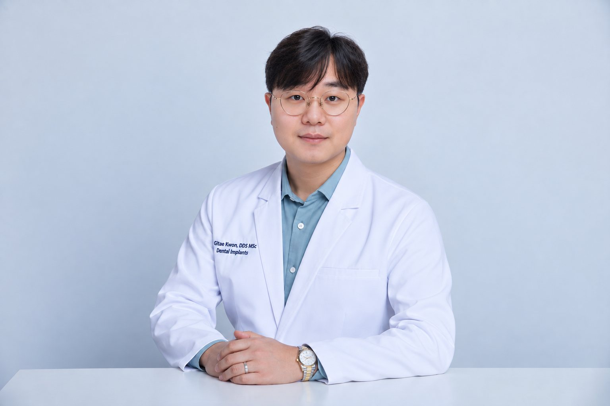
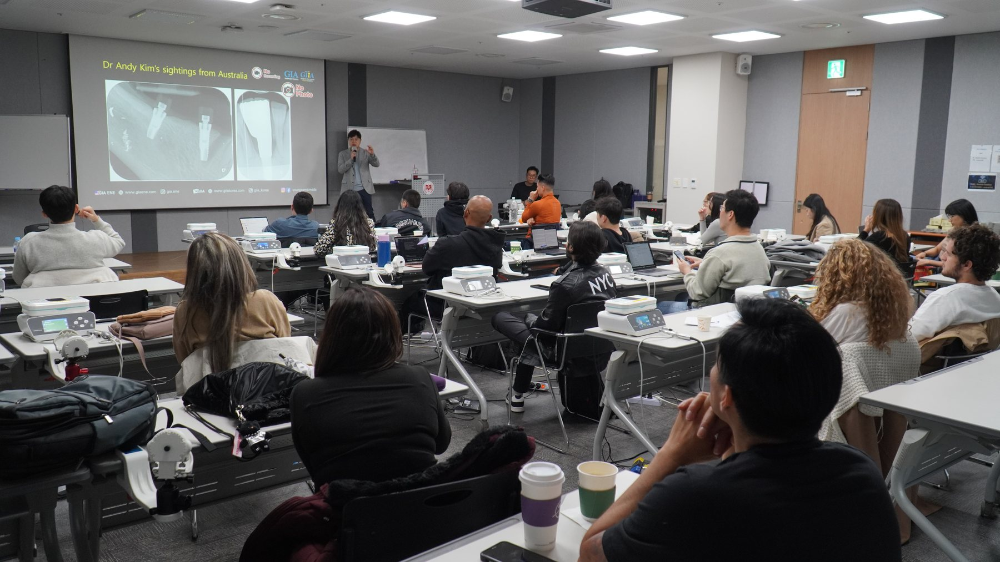
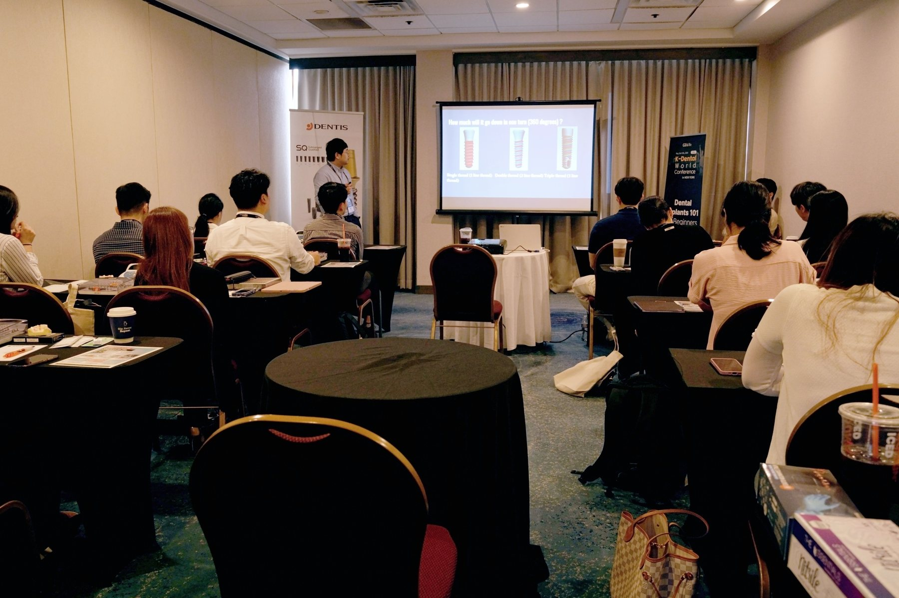

Meet The Doctor
Dr. Gitae Kwon, DDS, MSc
A dentist, implant educator, and visiting professor who believes trust and clear communication belong at the heart of care.

Care And Communication
Focused On Thoughtful, Lasting Dentistry
Dr. Kwon focuses on dental implant surgery, smile makeovers, and restorative care. He aims to explain each step clearly so patients can make informed choices about their care.
He teaches dental implant surgery and gives lectures in North and Central America. He also serves as a faculty member for a dental implant company and as a visiting professor at the University of Camillus in Rome.
Dr. Kwon has published dental implant books with his mentor, Dr. Youngsam Kim.
Education And Teaching
Learning Shared With Care
- DDS from NYU College of Dentistry
- Master’s degree in Dental Implantology and Advanced Surgical Extractions from the University of Camillus, Rome
- Lectures and teaches dental implant surgery
- Visiting professor at the University of Camillus, Rome
Education and teaching details reflect information on the practice website and in the submitted onboarding interview. Please confirm final wording before launch.
Beyond The Practice
Teaching And Sharing Knowledge
Dr. Kwon's work includes education for fellow dental professionals. These client-submitted photos show dental education sessions.


Our Mission
Built On Trust. Dentistry & Implants, Built To Last.
We believe exceptional dentistry begins with trust. Through sincere care, modern technology, and a commitment to careful work, we help patients build healthier, more confident smiles for years to come.
Find An Office